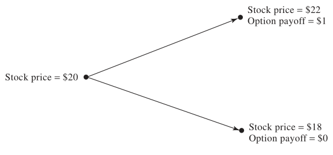
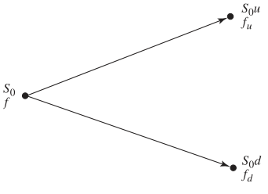
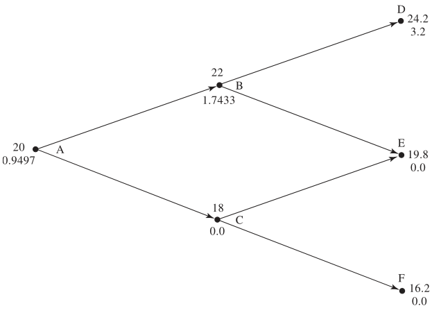
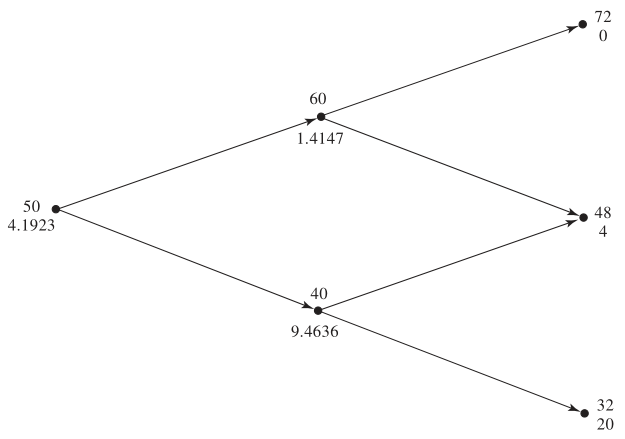
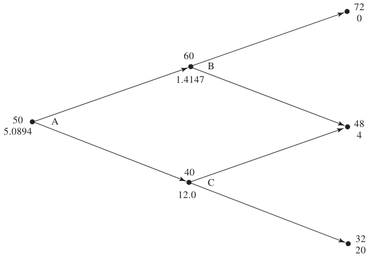

8 Option Pricing - Binomial Trees
- HULL, John. Options, futures, and other derivatives. Ninth edition. Harlow: Pearson, 2018. ISBN 978-1-292-21289-0.
- Chapter 13 - Binomial Trees
- PIRIE, Wendy L. Derivatives. Hoboken: Wiley, 2017. CFA institute investment series. ISBN 978-1-119-38181-5.
- Chapter 4 - Valuation of Contingent Claims
- Cox, J. C., S. A. Ross, and M. Rubinstein. "Option Pricing: A Simplified Approach," Journal of Financial Economics 7 (October 1979): 229–64.
Learning Outcomes:
- Understand the basic principles of the one-step binomial model for option pricing, including how to set up a riskless portfolio and calculate the option’s value.
- Grasp the concept of risk-neutral valuation and its application in simplifying the pricing of derivatives by focusing on discounting expected payoffs at the risk-free rate.
- Learn how to extend the binomial model to two steps, including calculating the option value at each node and understanding the implications for option pricing.
- Comprehend the methodology for choosing the up (\(u\)) and down (\(d\)) factors in binomial models, based on the asset’s volatility and the length of the time step, as per the Cox, Ross, and Rubinstein (CRR) model.
- Gain insights into how the binomial model can be adapted for different types of assets, including nondividend paying stocks, stock indices, currencies, and futures contracts.
8.1 A One-Step Binomial Model
This section provides an overview of a fundamental financial derivative pricing method using a simplified binomial model. The model offers an intuitive approach to option pricing, grounded in the concept of constructing a riskless portfolio and applying arbitrage-free pricing principles.
This generalized model provides a foundational approach for valuing derivatives using discrete-time, binomial frameworks. It not only clarifies the mechanics of risk-neutral valuation but also lays the groundwork for understanding more complex derivatives and pricing methods in continuous-time models.
8.1.1 A Simple Binomial Model for a Call Option
Option Characteristics:
- 3-month call option on a stock.
- The option’s strike price is $21.
- Currently, the stock is priced at $20.
- In three months, the stock’s price can either rise to $22 or fall to $18.
- Risk-free rate of interest is 4%.

Option Pricing
- Constructing a Riskless Portfolio:
- The portfolio consists of being long \(\Delta\) shares of the stock and short 1 call option.
- To keep the portfolio risk-free over the option’s life, we find \(\Delta\) such that the portfolio’s value is independent of the stock’s final price:
- At stock price $22: Portfolio value = \(\$22 \Delta - 1\) (assuming the option is exercised).
- At stock price $18: Portfolio value = \(\$18 \Delta - 0\) (the option expires worthless).
- Setting these values equal to each other yields \(\Delta = 0.25\).
- Thus, a riskless portfolio entails being long 0.25 shares of the stock and short 1 call option.
- Valuing the Riskless Portfolio:
- With a risk-free rate of 4%, we calculate the portfolio’s present value.
- Future value of the portfolio in 3 months: \(\$22 \times 0.25 - 1 = \$18 \times 0.25 = \$4.50\).
- Discounting this back to the present yields: \(4.50 \times e^{-0.04 \times 0.25} = \$4.455\).
- Determining the Call Option’s Value:
- The portfolio, consisting of long 0.25 shares and short 1 option, is valued today at $4.455.
- The current value of 0.25 shares is \(0.25 \times \$20 = \$5\).
- Subtracting the portfolio’s value from the shares’ value gives the option’s price: \(\$5 - \$4.455 = \$0.545\).
8.1.2 Generalized Framework for Binomial Option Pricing
This section extends the simple binomial model to a more general framework, illustrating how option prices can be systematically derived under varying market conditions. This generalization leverages the fundamental concepts of arbitrage-free pricing and the construction of a synthetic, risk-free portfolio.
Core Principles
The ending value of a portfolio that contains \(\Delta\) shares of stock and one short call option can vary based on the stock’s final price movement:
- Following an upward movement, the value is \(S_0u\Delta - f_u\).
- Following a downward movement, the value is \(S_0d\Delta - f_d\).
Creation of a Riskless Portfolio: To eliminate risk, the values from both upward and downward movements must be equalized, leading to the determination of \(\Delta\):
\[\Delta = \frac{f_u - f_d}{S_0 (u - d)}\]
This equation highlights that \(\Delta\) effectively measures the sensitivity of the option’s price to changes in the underlying stock’s price, akin to the “delta” in continuous-time models.
No-Arbitrage Condition: The portfolio’s risk-free nature implies it should yield returns at the risk-free rate, reinforcing the no-arbitrage principle in financial markets.
Analytical Representation

- At time \(T\), the portfolio’s value is \(S_0 u \Delta - f_u\).
- Discounted to present value, this becomes \((S_0 u \Delta - f_u)e^{-rT}\).
- The initial cost, or present value, of establishing this portfolio is \(S_0 \Delta - f\).
By equating the initial investment to the present value of the future payoff, we derive the option’s pricing formula:
\[f = S_0 \Delta - (S_0 u \Delta - f_u)e^{-rT}\]
Substituting \(\Delta\) yields the generalized option pricing equation:
\[f = [pf_u + (1 - p)f_d]e^{-rT}\]
where \(p\) represents the risk-neutral probability of an upward price movement:
\[p = \frac{e^{rT} - d}{u - d}\]
Interpretation of \(p\) as a Probability
- The parameter \(p\) and its complement \((1 - p)\) can be interpreted as the probabilities of the stock’s upward and downward price movements, respectively.
- This interpretation leads to a significant insight: the value of an option, or more broadly any derivative, in this model is equivalent to its expected payoff in a “risk-neutral” world, discounted at the risk-free rate. This reflects the fundamental principle that, in an arbitrage-free market, derivative pricing must align with the expected payoff under risk neutrality.
8.1.3 Key Formulas in Binomial Option Pricing
The binomial model provides a straightforward method for determining the price of an option using a discrete-time framework. The central formulas include:
- Option Price Calculation: This formula represents the present value of the expected payoff of the option, adjusted for risk neutrality.
\[f = [pf_u + (1 - p)f_d]e^{-rT}\]
- Risk-neutral Probability: \(p\) calculates the risk-neutral probability of the stock price moving up, crucial for determining the expected option payoff.
\[p = \frac{e^{rT} - d}{u - d}\]
Variable Definitions:
- \(f\): The current price/premium of the option.
- \(p\): The risk-neutral probability of the stock’s price moving up (upward movement).
- \((1-p)\): The risk-neutral probability of the stock’s price moving down (downward movement).
- \(f_u\): The payoff from the option in the event of an up movement in the stock price.
- \(f_d\): The payoff from the option in the event of an down movement in the stock price.
- \(u\): The factor by which the stock price increases in the event of an upward movement. This multiplicative factor represents the potential growth of the stock’s price in the model’s “up” state.
- \(d\): The factor by which the stock price decreases in the event of a downward movement. This multiplicative factor indicates the potential decline of the stock’s price in the model’s “down” state.
- \(T\): The time to maturity (or expiration) of the option, expressed in years.
- \(r\): The annualized, continuously compounded risk-free interest rate.
Consider an option with parameters: \(u = 1.1\), \(d=0.9\), \(r=0.04\), \(T=0.25\) (three months), \(f_u = 1\) (payoff if the stock price increases), and \(f_d = 0\) (payoff if the stock price decreases).
- Calculating \(p\):
\[p = \frac{e^{0.04 \times 0.25} - 0.9}{1.1 - 0.9} = 0.5503\]
This result indicates a 55.03% risk-neutral probability of the stock price increasing.
- Determining \(f\) (Option Price):
\[f = e^{-0.04 \times 0.25} (0.5503 \times 1 + 0.4497 \times 0) = 0.545\]
The calculated option price is $0.545, reflecting the present value of the option’s expected payoff, discounted at the risk-free rate.
8.2 Risk-Neutral Valuation Framework
Risk-neutral valuation is a pivotal concept in financial mathematics, offering a streamlined and theoretically robust method for pricing derivatives. This approach is grounded in the notion that the expected return on the underlying asset can be assumed to be the risk-free rate when valuing derivatives. Here, we elaborate on this principle and its practical implications, using a binomial model as the illustrative framework.
8.2.1 Core Concept
Expected Stock Price Dynamics: In a binomial model where the probability of upward and downward movements are denoted by \(p\) and \(1-p\) respectively, the expected stock price at time \(T\), discounted back to the present, is mathematically equivalent to the stock’s initial price compounded at the risk-free rate, \(S_0e^{rT}\). This equivalence underscores the principle that, under risk-neutral valuation, the stock is assumed to grow at the risk-free rate over time.
Binomial Trees and Derivative Pricing: The use of binomial trees in financial modeling demonstrates a general principle: to value a derivative, it is sufficient to assume that the underlying asset yields a return equal to the risk-free rate, and similarly, the discount rate applied to future payoffs is the risk-free rate. This methodology, known as risk-neutral valuation, simplifies the derivative pricing process by abstracting away from the actual expected return of the underlying asset.
Consider an option with parameters: \(u = 1.1\), \(d=0.9\), \(r=0.04\), \(T=0.25\) (three months), \(f_u = 1\) (payoff if the stock price increases), and \(f_d = 0\) (payoff if the stock price decreases).
The calculation proceeds as follows:
\[22p + 18(1-p) = 20 e^{0.04 \times 0.25} \Rightarrow p = 0.5503\]
- This implies a 55.03% probability of the option being worth $1 (if the stock price increases) and a 44.97% probability of it being worth $0 (if the stock price decreases) at the end of 3 months. The expected value of the option, calculated under the risk-neutral probability, is therefore:
\[0.5503 \times 1 + 0.4497 \times 0 = 0.5503\]
- Discounting this expected value at the risk-free rate gives the present value of the option:
\[0.5503 e^{-0.04 \times 0.25} = 0.545\]
- Remarkably, this value aligns with the outcome obtained through no-arbitrage arguments, affirming the congruence between no-arbitrage principles and risk-neutral valuation in deriving the same pricing result for the derivative.
8.2.2 The Irrelevance of the Stock’s Expected Real-World Return
- A key insight from risk-neutral valuation is the irrelevance of the real-world probabilities of the underlying asset’s future price movements when valuing options.
- Since the current stock price embeds these real-world probabilities, derivative pricing can proceed without needing to account for them again.
- This perspective aligns with a broader financial theory that the expected return of the underlying asset, as anticipated in the real world, does not affect the valuation of derivatives based on that asset.
- The valuation hinges instead on the construct of a risk-neutral world where all assets are assumed to grow at the risk-free rate.
8.3 Two-Step Binomial Trees
Two-step binomial trees extend the single-period model to allow for a more detailed examination of option pricing over multiple periods. This method can value both call and put options by simulating possible paths the underlying asset’s price might take and then discounting expected payoffs back to the present value.
8.3.1 Valuing a Call Option
Consider a call option with a strike price (\(K\)) of $21, where each time step represents 3 months. The annual risk-free rate (\(r\)) is 4%, with up (\(u\)) and down (\(d\)) factors of 1.1 and 0.9, respectively, and the risk-neutral probability (\(p\)) is 0.5503.

At the final nodes (\(D\), \(E\), \(F\)), the option value simply reflects the option payoff at expiration.
At nodes \(B\) and \(C\), the option’s value is calculated as the present value of its expected payoff:
- \(\text{Value at node } B = e^{-0.04 \times 0.25}(0.5503 \times 3.2 + 0.4497 \times 0) = \$1.7433\)
- \(\text{Value at node } C = 0 + 0 = \$0\)
Moving back to the initial node (\(A\)), we compute the present value of the expected option payoff from nodes \(B\) and \(C\):
- \(\text{Value at node } A = e^{-0.04 \times 0.25}(0.5503 \times 1.7433 + 0.4497\times 0) = \$0.9497\)
8.3.2 Valuing a Put Option
For a put option with a strike price (\(K\)) of $52 and a time step of 1 year, the parameters are: \(r = 5\%\), \(u = 1.2\), \(d = 0.8\), and \(p = 0.6282\).

- Following the same approach and determining option values at each node from right to left, we obtain:
- \(\text{Value at node } C = e^{-0.05 \times 1}(0.6282 \times 4 + 0.3718 \times 20) = \$9.4636\)
- \(\text{Value at node } B = e^{-0.05 \times 1}(0.6282 \times 0 + 0.3718 \times 4) = \$1.4147\)
- \(\text{Value at node } A = e^{-0.05 \times 1}(0.6282 \times 1.4147 + 0.3718 \times 9.4636) = \$4.1923\)
8.3.3 What Happens When the Put Option is American?
American options allow for early exercise, affecting their valuation. Specifically, for the previous example with a put option:
The exercising early increases the option’s value at node \(C\) to \(\$12\).
The recalculated value at node \(A\), incorporating the potential for early exercise, is:
- \(\text{Value at node } A = e^{-0.05 \times 1}(0.6282 \times 1.4147 + 0.3718 \times 12.0000) = \$5.0894\)

The introduction of the American feature, hence, increases the put option’s value from $4.1923 to $5.0894, reflecting the added value of early exercise flexibility.
The same approach applies to call options.
8.4 Choosing \(u\) and \(d\) for Binomial Models
In binomial option pricing models, accurately modeling the underlying asset’s price dynamics is crucial. One effective approach to align these models with the asset’s volatility—a key measure of its price fluctuations—is to set the up (\(u\)) and down (\(d\)) factors based on volatility. This method ensures that the model captures the essence of the asset’s risk and return characteristics over the specified time steps.
8.4.1 Cox, Ross, and Rubinstein (CRR) Methodology
Cox, Ross, and Rubinstein’s seminal work in 1979 introduced a practical and widely adopted method for setting \(u\) and \(d\), which directly ties these parameters to the asset’s volatility (\(\sigma\)) and the length of the model’s time step (\(\Delta t\)):
\[u = e^{\sigma \sqrt{\Delta t}}\]
\[d = \frac{1}{u} = e^{-\sigma \sqrt{\Delta t}}\]
This approach ensures that the binomial model reflects the underlying asset’s volatility, allowing for a more accurate and realistic simulation of its price movements. The choice of \(u\) as an exponentiation of volatility times the square root of the time step captures the log-normal distribution of stock prices over time, consistent with empirical observations.
Girsanov’s Theorem provides a critical theoretical foundation for applying real-world volatility measurements within a risk-neutral pricing framework. The theorem suggests that while the expected return on an asset may differ between the real world and the risk-neutral world, the asset’s volatility (\(\sigma\)) remains consistent across both.
Volatility Consistency: Girsanov’s Theorem assures us that volatility—a fundamental input in modeling asset price dynamics—is invariant whether we’re considering a real-world or risk-neutral probability measure. This invariance allows us to observe and measure volatility in the real world and then directly apply these measurements to construct a binomial tree for option pricing in the risk-neutral world.
Risk-Neutral Valuation: Despite the potential differences in expected returns between the real and risk-neutral worlds, the theorem supports the use of risk-neutral valuation. By ignoring risk preferences and market expectations, risk-neutral valuation simplifies the pricing of derivatives by focusing solely on the discounting of expected payoffs at the risk-free rate, underpinned by the consistent application of real-world volatility measures.
8.5 The Binomial Tree Model Summary
8.5.1 Core Formulas
Price Movement Factors
The magnitude of up (\(u\)) and down (\(d\)) movements in the asset’s price is modeled to reflect the asset’s volatility (\(\sigma\)) and the length of the time step (\(\Delta t\)):
\[u = e^{\sigma \sqrt{\Delta t}}\]
\[d = \frac{1}{u} = e^{-\sigma \sqrt{\Delta t}}\]
These factors ensure that the model captures the log-normal distribution of asset price changes, consistent with empirical observations.
Probability of an Up Move
The risk-neutral probability (\(p\)) of an upward price movement is derived as:
\[p = \frac{a - d}{u - d}\] \[a = e^{r\Delta t}\]
Here, \(a\) represents the asset’s expected growth factor over a single time step under the risk-free rate (\(r\)), adjusting for any dividends or interest rate differentials.
Option Value Calculation
The value of an option in a one-step binomial model is determined by:
\[f = [pf_u + (1 - p)f_d]e^{-rT}\]
where \(f_u\) and \(f_d\) are the option’s payoffs in the event of an up or down move, respectively, and \(T\) is the total time to maturity.
8.5.2 Application to Various Assets
While the basic binomial tree structure remains constant, adjustments to the calculation of \(p\) accommodate different types of underlying assets, reflecting their unique characteristics.
- Nondividend Paying Stocks:
- \(a = e^{r\Delta t}\)
- Stock Indices: For indices that pay dividends, the dividend yield (\(q\)) is subtracted from the risk-free rate:
- \(a = e^{(r-q)\Delta t}\)
- Currencies: For options on currencies, the foreign risk-free rate (\(r_f\)) is subtracted from the domestic rate:
- \(a = e^{(r - r_f) \Delta t}\)
- Futures Contracts: For futures, the growth factor (\(a\)) simplifies to 1 since futures prices already embody the cost-of-carry, negating the need for discounting or growth adjustments:
- \(a = 1\)
8.6 Practice Questions and Problems
- A stock price is currently $40. It is known that at the end of one month it will be either $42 or $38. The risk-free interest rate is 8% per annum with continuous compounding. What is the value of a one-month European call option with a strike price of $39?
Option price = 1.69
- A stock price is currently $50. It is known that at the end of six months it will be either $45 or $55. The risk-free interest rate is 10% per annum with continuous compounding. What is the value of a six-month European put option with a strike price of $50?
Option price = 1.16
Explain the no-arbitrage and risk-neutral valuation approaches to valuing a European option using a one-step binomial tree.
A stock price is currently $100. Over each of the next two six-month periods it is expected to go up by 10% or down by 10%. The risk-free interest rate is 8% per annum with continuous compounding. What is the value of a one-year European call option with a strike price of $100?
Option price = 9.6104
- For the situation considered in Problem 4, what is the value of a one-year European put option with a strike price of $100? Verify that the European call and European put prices satisfy put-call parity.
Option price = 1.9203
- Calculate \(u\), \(d\), and \(p\) when a binomial tree is constructed to value an option on a foreign currency. The tree step size is one month, the domestic interest rate is 5% per annum, the foreign interest rate is 8% per annum, and the volatility is 12% per annum.
u = 1.0352, d = 0.966, p = 0.4553
- A stock index is currently 1,500. Its volatilityis 18%. The risk-free rate is 4% per annum (continuously compounded) for all maturities and the dividend yield on the index is 2.5%. Calculate values for \(u\), \(d\), and \(p\) when a six-month time step is used. What is the value a 12-month American put option with a strike price of 1,480 given by a two-step binomial tree.
Option price = 78.41